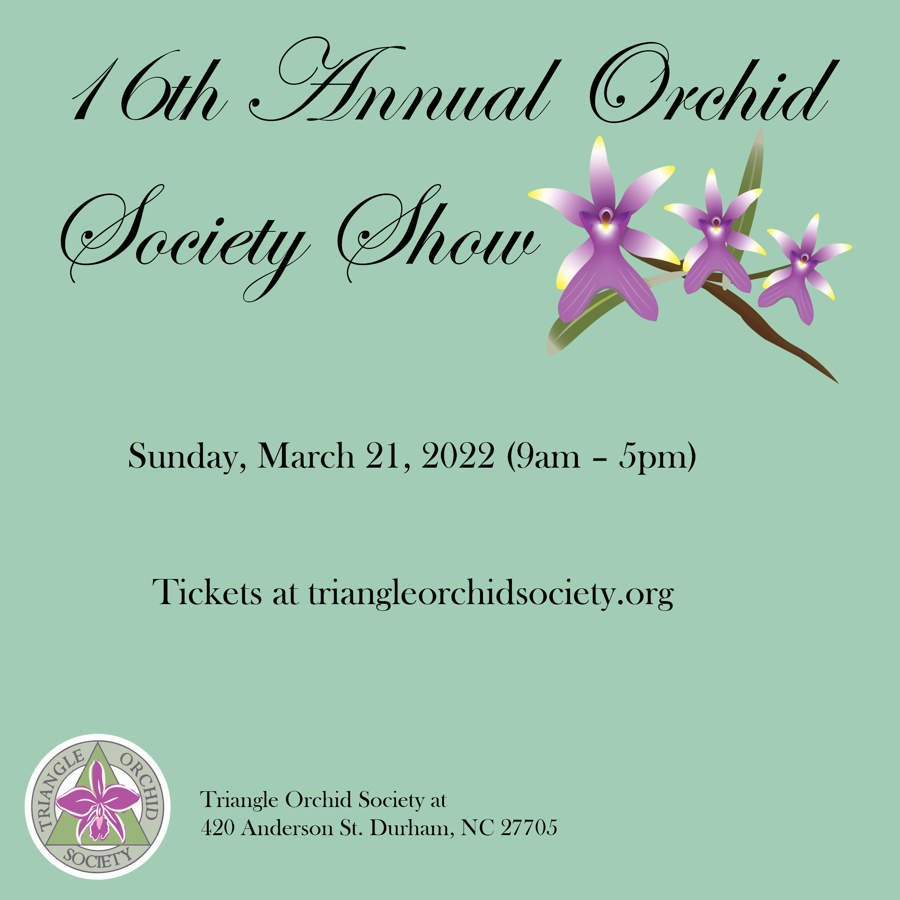

 Tasked to create a realisitc looking orchid using the tool in Adobe Illustrator. Tasked to create the branding for a dog treat company based on different physical activities. Tasked to create a logo for a frozen treat company, went for one selling predominately sitris tasting desserts. Tasked to create a logo for a drink company, went with an animal for the branding, calling it "Fruit Zoo". Tasked to modernize an advertisement for an old brand Tasked to create an advertisement poster using select photos for events happening at the North Carolina Zoo